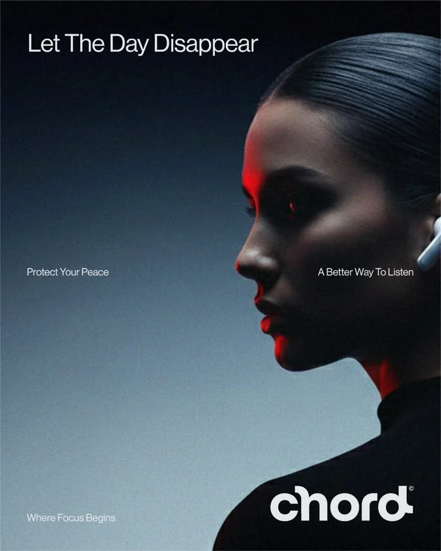
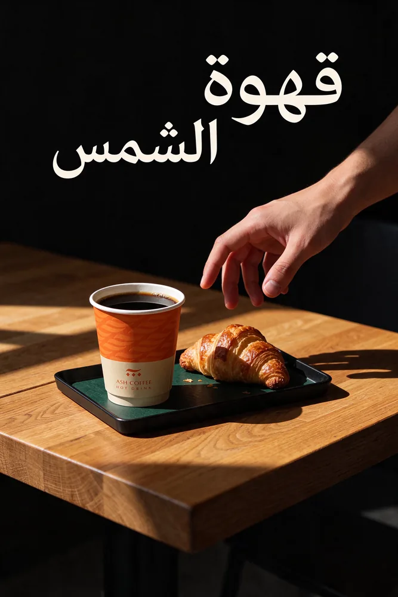
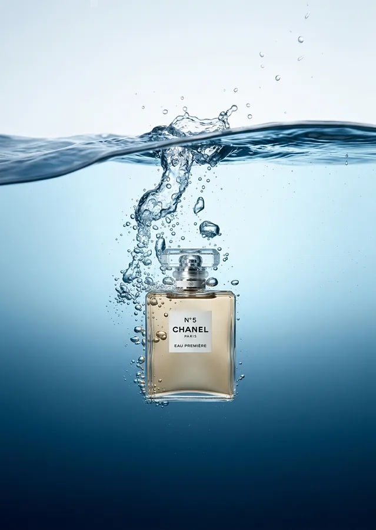
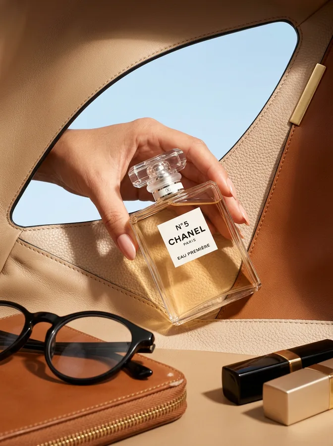
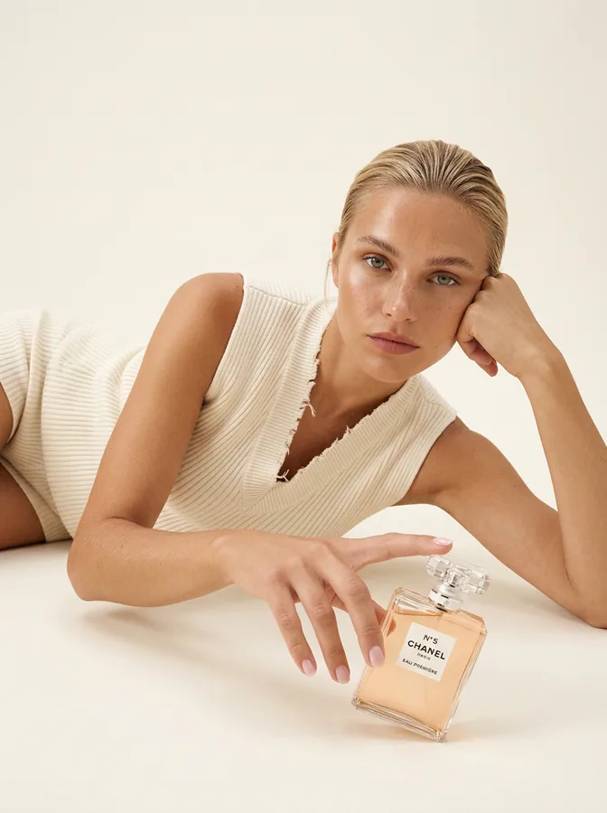
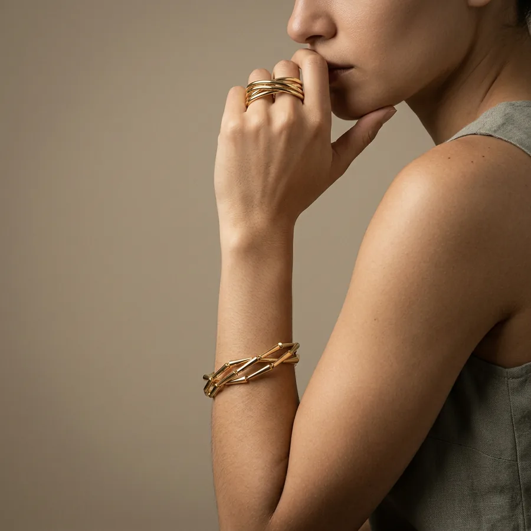
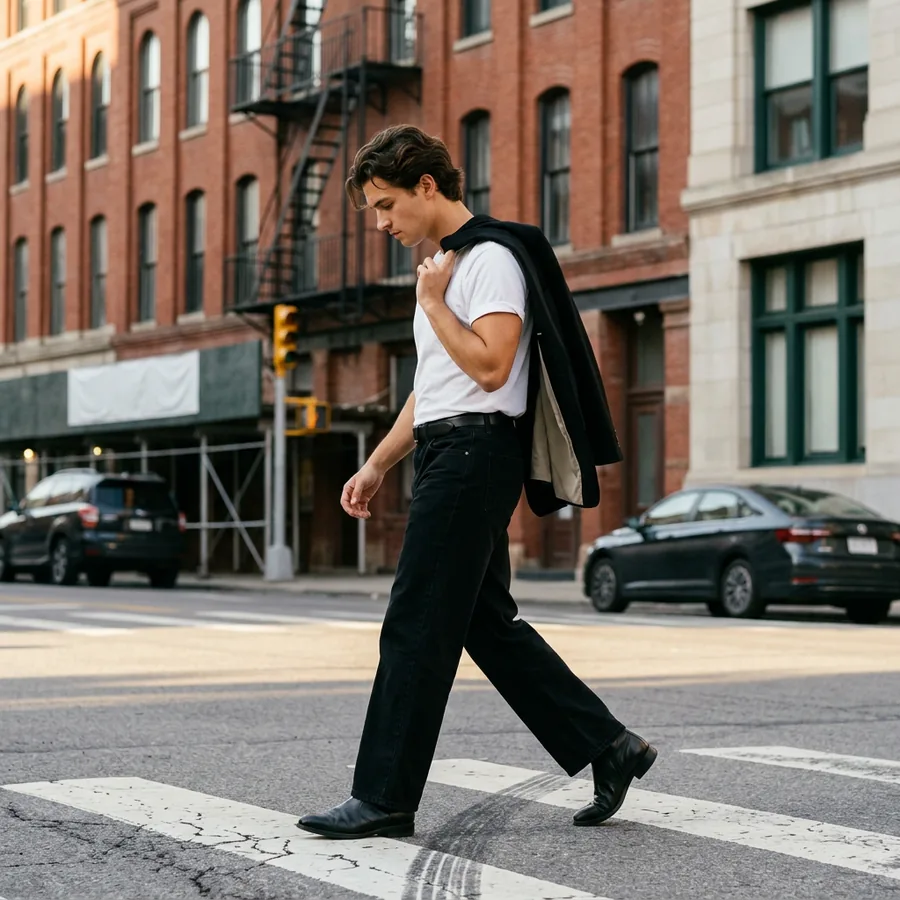
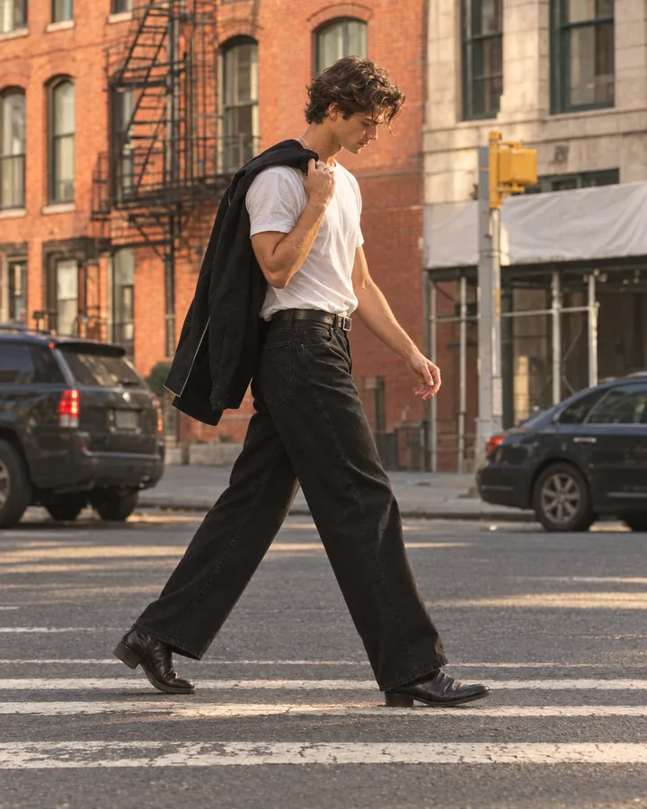
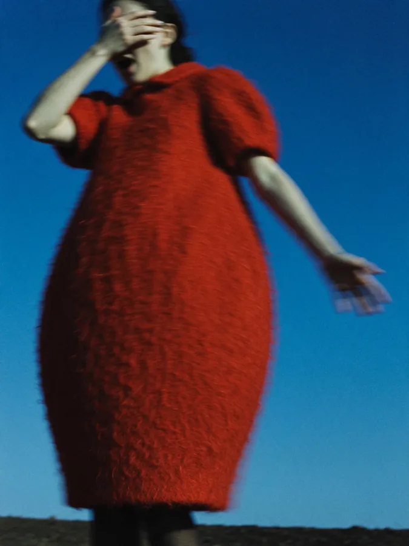
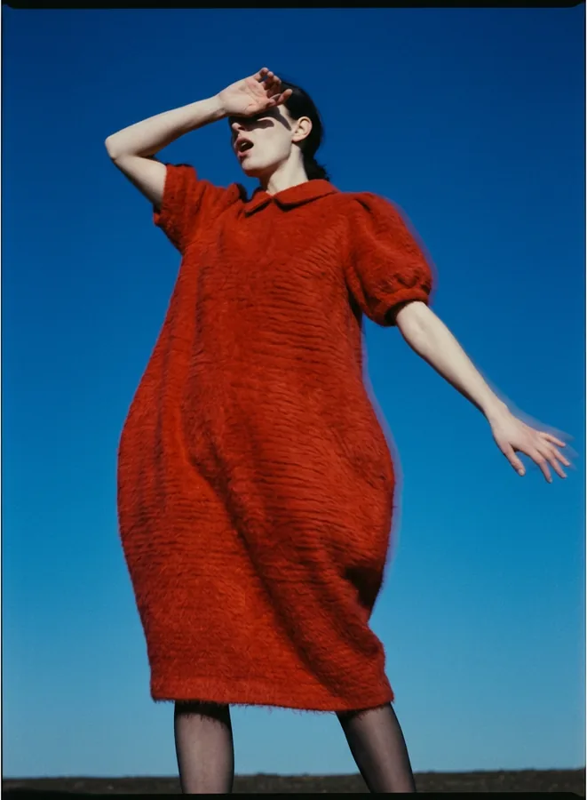

باختصار: إن كانت الصورة التي تخرج لك ليست التي في بالك، فقد تكون تستخدم النموذج الخطأ. هذه الاستخدامات الخمسة التي شرحتها في الفيديو، ومع كل استخدام النموذج الذي أختاره له، وصور من تجاربي.
من تجاربي على Seedream 5.5.
كل نموذج من نماذج توليد الصور قويّ في مهمة وضعيف في غيرها. حين تطلب من النموذج شيئًا لم يُصنع له، ستعدّل البرومبت مرة بعد مرة، والمشكلة ليست في البرومبت.
الصور في هذا الدليل كلها من تجاربي: الطلب نفسه على أكثر من نموذج، لترى الفرق بعينك.
للنصوص والتصميم الكامل.

ترجمة منشور من الإنجليزية إلى العربية: النصوص والخطوط في أماكنها، والصورة كما هي.

من تجربتي: طلبتُ «كرواسون وقهوة» فكتبها كما هي، أما Seedream فكتب «قهوة الشمس»، ولا أعرف لماذا.
لثبات المنتج.



منتج واحد في أربع بيئات · Nano Banana 2.1
للإحساس الراقي والتحريري.

من تجربتي: قارنتُ Nano Banana و GPT و Seedream على الطلب نفسه، فكانت نتيجة Seedream في مستوى آخر.
للصورة التي تبدو حقيقية.


الطلب نفسه على ثلاثة نماذج.
للمود والإحساس، والأقرب إلى قلبي.


الطلب نفسه على ثلاثة نماذج.
| إن كنت تريد… | استخدم |
|---|---|
| نصوصًا دقيقة وتصميمًا كاملًا | ١GPT Image 2.6 |
| منتجك ثابتًا في كل صورة | ٢Nano Banana 2.1 |
| إحساسًا راقيًا وتحريريًا | ٣Seedream 5.5 |
| صورة تبدو حقيقية | ٤Higgsfield Soul 2 |
| مودًا واتجاهًا فنيًا | ٥Midjourney |
لا تسأل: أيّ نموذج هو الأفضل؟
اسأل: ما المهمة التي أريدها؟
مجتمع صُنّاع الإلهام مجتمع عربي للمبدعين، أسّسه ماجد عنقاوي، يتعلّم فيه المبدع الذكاء الاصطناعي والعمل في المجال الإبداعي. عضوية سنوية تتيح لك بثوث مباشرة والعديد من الدورات والماستركلاسات. رؤيتنا أن نصبح المجتمع الإبداعي الأول في العالم العربي. ومهمتنا تمكين المبدع العربي من العمل كمبدع بدوام كامل. كان اسمه سابقاً MA Learn.
تعرّف على المجتمعالصور من تجاربي بتاريخ 17 نوفمبر 2026. النماذج تتحدّث بسرعة، وقد تختلف نتائجك. اسم Chanel وزجاجتها ملك أصحابها، واستُخدما هنا للتجربة فقط.
من ماجد عنقاوي · malearnsa.com · @majidangawi